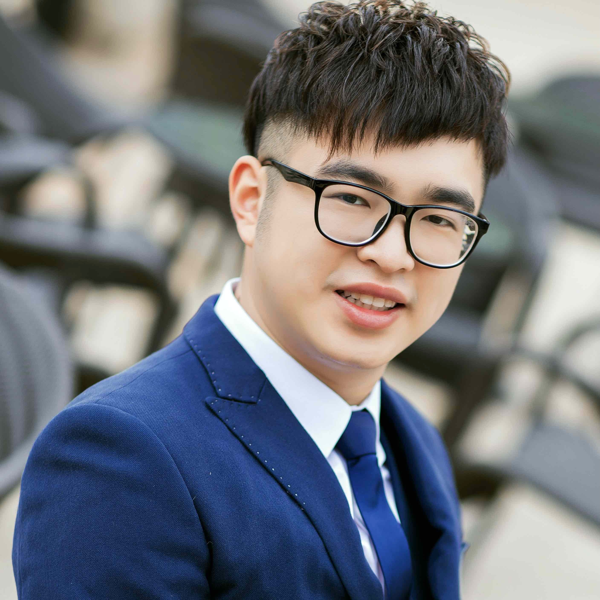

|  | Xinwei (Mason) Fu, Ph.D. |
I am a Senior Applied Scientist in the AWS AI team of Amazon. Our team focuses on optimizing systems and compilers to advance large-scale model training and inference on AWS homegrown accelerators.
Prior to joining Amazon, I earned my Ph.D. in Computer Science from Virginia Tech, where I had the privilege of being advised by Dr. Changwoo Min and Dr. Dongyoon Lee.
Machine Learning System
Software Reliability
Persistent Memory
Distributed Training of Large Language Models on AWS Trainium
Xinwei Fu, Zhen Zhang, Haozheng Fan, Guangtai Huang, Mohammad El-Shabani, Randy Huang, Rahul Solanki, Fei Wu, Ron Diamant, and Yida Wang
In Proceedings of the 15th ACM Symposium on Cloud Computing (SoCC 2024)
HLAT: High-quality Large Language Model Pre-trained on AWS Trainium
Haozheng Fan, Hao Zhou, Guangtai Huang, Parameswaran Raman, Xinwei Fu, Gaurav Gupta, Dhananjay Ram, Yida Wang, and Jun Huan
In Proceedings of the 2024 IEEE International Conference on Big Data (IEEE BigData 2024)
Gemini: Fast Failure Recovery in Distributed Training with In-Memory Checkpoints
Zhuang Wang, Zhen Jia, Shuai Zheng, Zhen Zhang, Xinwei Fu, T. S. Eugene Ng, and Yida Wang
In Proceedings of the 29th ACM Symposium on Operating Systems Principles (SOSP 2023)
Durinn: Adversarial Memory and Thread Interleaving for Detecting Durable Linearizability Bugs
Xinwei Fu, Dongyoon Lee, and Changwoo Min
In Proceedings of the 16th USENIX Symposium on Operating Systems Design and Implementation (OSDI 2022)
[paper | slides | code]
ReplayCache: Enabling Volatile Caches for Energy Harvesting Systems
Jianping Zeng, Jongouk Choi, Xinwei Fu, Ajay P. Shreepathi, Dongyoon Lee, Changwoo Min, and Changhee Jung
In Proceedings of the 13rd annual non-volatile memories workshop (NVMW 2022)
[paper | slides]
Witcher: Systematic Crash Consistency Testing for Non-Volatile Memory Key-Value Stores
Xinwei Fu, Wook-Hee Kim, Ajay Paddayuru Shreepathi, Mohannad Ismail, Sunny Wadkar, Dongyoon Lee, and Changwoo Min
In Proceedings of the 28th ACM Symposium on Operating Systems Principles (SOSP 2021)
[paper | slides | code | video]
PACTree: A High Performance Persistent Range Index Using PAC Guidelines
Wook-Hee Kim, R. Madhava Krishnan, Xinwei Fu, Sanidhya Kashyap, and Changwoo Min
In Proceedings of the 28th ACM Symposium on Operating Systems Principles (SOSP 2021)
[paper | slides | code | video]
ReplayCache: Enabling Volatile Caches for Energy Harvesting Systems
Jianping Zeng, Jongouk Choi, Xinwei Fu, Ajay Paddayuru Shreepathi, Dongyoon Lee, Changwoo Min, and Changhee Jung
In Proceedings of the 54th Annual IEEE/ACM International Symposium on Microarchitecture (MICRO 2021)
[paper | slides]
TIPS: Making Volatile Index Structures Persistent with DRAM-NVMM Tiering
R. Madhava Krishnan, Wook-Hee Kim, Xinwei Fu, Sumit Kumar Monga, Hee Won Lee, Minsung Jang, Ajit Mathew, and Changwoo Min
In Proceedings of USENIX Annual Technical Conference (ATC 2021)
[paper | slides | code | video]
Durable Transactional Memory Can Scale with TimeStone
R.Madhava Krishnan, Jaeho Kim, Ajit Mathew, Xinwei Fu, Anthony Demeri, Changwoo Min and Sudarsun Kannan
In Proceedings of the 11th Annual Non-Volatile Memories Workshop (NVMW 2020)
[paper | code]
Durable Transactional Memory Can Scale with TimeStone
R.Madhava Krishnan, Jaeho Kim, Ajit Mathew, Xinwei Fu, Anthony Demeri, Changwoo Min and Sudarsun Kannan
In Proceedings of ACM International Conference on Architectural Support for Programming Languages and Operating Systems (ASPLOS 2020)
[paper | slides | code | video]
EdgeWise: A Better Stream Processing Engine for the Edge
Xinwei Fu, Talha Ghaffar, James C. Davis and Dongyoon Lee
In Proceedings of USENIX Annual Technical Conference (ATC 2019)
[paper | slides | code | video]
nAdroid: Statically Detecting Ordering Violations in Android Applications
Xinwei Fu, Dongyoon Lee, and Changhee Jung
In Proceedings of IEEE/ACM International Symposium on Code Generation and Optimization (CGO 2018)
[paper | code]
Conference Committee Activities
Program Committee, USENIX Annual Technical Conference (ATC). 2023, 2024, 2025
Program Committee, Annual Conference on Machine Learning and Systems (MLSys). 2025
Program Committee, IEEE International Parallel & Distributed Processing Symposium (IPDPS). 2025
Program Committee, ACM SIGPLAN/SIGBED International Conference on Languages, Compilers, and Tools for Embedded Systems (LCTES). 2023
Artifact Evaluation Program Committee, IEEE/ACM International Symposium on Code Generation and Optimization (CGO). 2019
Conference Organizing Activities
Artifact Evaluation Co-Chair, ACM SIGPLAN/SIGBED International Conference on Languages, Compilers, and Tools for Embedded Systems (LCTES). 2023